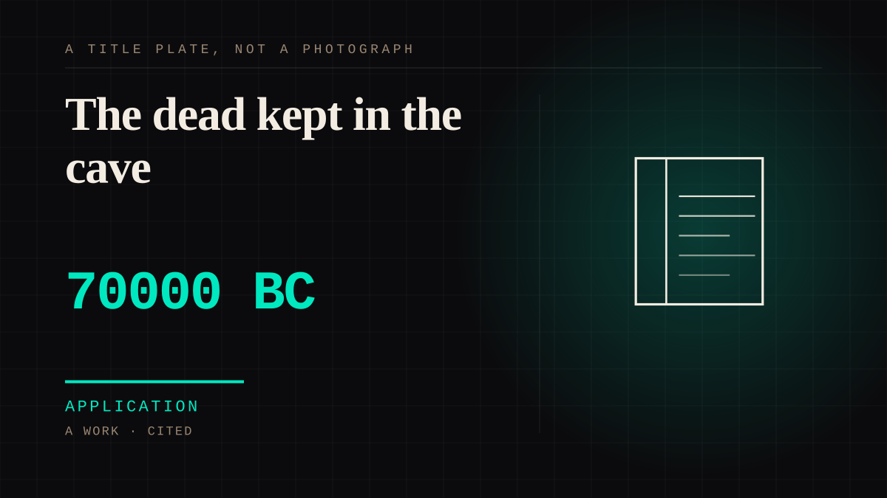

A work · 70000 BC · Deep prehistory
The dead kept in the cave
Neanderthals repeatedly carried their dead into one cave in northern Iraq and put them down in the floor. Shanidar 4 was found on his side with his arm under his head; Shanidar Z lay in a hollow gouged out to fit her, with a stone under her head. The cluster dates to roughly seventy to seventy-five thousand years ago.

The oldest evidence on this site of people treating the dead as somewhere you go, rather than something you leave behind. It sits about fifty-five thousand years before the dog, which settles an argument this site was getting wrong: one-sided attachment to a non-human does not begin with a domesticated animal. It is also the discipline case. The famous flowers were a mistake - the pollen turned out to come from burrowing rodents - and the burials survived the debunk anyway. That is what a real claim looks like after someone has been wrong about part of it. One limit worth stating: Sunghir, later and better studied, shows this was not a single uniform practice, so what Shanidar documents is the earliest *instance* of something that varied a great deal.
Application. One-sided attachment put to work on purpose. Creator economies, community, fandom as infrastructure, and the things that genuinely help people. Not automatically good - a tool with an obvious use is a tool that will also get a bad one.
Where it sits
3000 BC Before 0 · 70000 BC 1 BC
Provenance · 2 source record(s)
- retrievableDates and method: repeated interment in the same cave; the most recent individual found in a shallow scoop partly covered by rocks that appear to have been placed, dated to around 70,000-75,000 years ago, with an earlier cluster at 70,000-60,000 and others at 45,000-50,000.University of Cambridge, Department of Archaeology. Shanidar Cave Project. Date of access recorded in tools/citation_audit_baseline.json run. ↗
- unverifiedThe peer-reviewed report of the new articulated remains. Recorded because it is the primary source, and marked unverified because Cambridge Core returns 403 to an unauthenticated request.Pomeroy, E., Bennett, P., & Hunt, C. O. (2020). New Neanderthal remains associated with the 'flower burial' at Shanidar Cave. Antiquity, 94(373), 11-26. doi:10.15184/aqy.2019.207 ↗
DIVINE The saint and the ancestor
Connected · 3 out, 1 in
It sits in
The full timeline → · The database → · See it in the atlas →